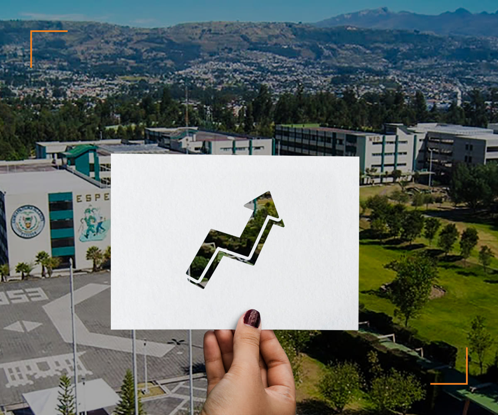

| Misión |
|
| "Formar académicos, profesionales e investigadores de excelencia, creativos, humanistas, con capacidad de liderazgo, pensamiento crítico y alta conciencia ciudadana; generar, aplicar y transferir el conocimiento; y, proporcionar e implementar alternativas de solución a los problemas del país acordes con el Plan Nacional de Desarrollo”. |
|  |
Visión |
| Ser una universidad líder en la gestión del conocimiento y tecnología en el sistema de educación superior del país, con prestigio internacional y referente de práctica de valores éticos, cívicos y de servicio a la sociedad |
| Propuesta |
| Convertirse en un referente nacional e internacional en estudios de cuarto nivel por su excelencia académica. Ofertando programas de postgrado innovadores en ciencias y artes de alta calidad, acordes con el desarrollo social y tecnológico de nuestra sociedad. |
| Objetivos |
|
| Formar profesionales íntegros y humanistas al servicio de la sociedad ecuatoriana, para impulsar el desarrollo técnico, económico y cultural del país mediante la práctica de la ciencia y la investigación.
Realizar trabajos de investigación o servicios en las ciencias e ingenierías como principio fundamental de una educación científica.
Actualizar y profundizar el conocimiento de las ciencias e ingenierías tanto en su connotación tecnológica como socio-económica. |
| Valores Institucionales |
La conducta de todos y cada uno de los miembros de la comunidad universitaria, se mantendrá siempre bajo la práctica de los valores institucionales que se describen a continuación:
- Honestidad a toda prueba.
- Respeto a la libertad de pensamiento.
- Orden, puntualidad y disciplina conscientes.
- Búsqueda permanente de la calidad y la excelencia.
- Igualdad de oportunidades.
- Respeto a las personas y los derechos humanos.
- Reconocimiento a la voluntad, creatividad y perseverancia.
- Práctica de la justicia, solidaridad y lealtad.
- Práctica de la verdadera amistad y camaradería.
- Cultivo del civismo y respeto al medio ambiente.
- Compromiso con la institución y la sociedad.
- Identidad institucional.
- Liderazgo y Emprendimiento.
- Pensamiento crítico.
- Alta conciencia ciudadana.
|